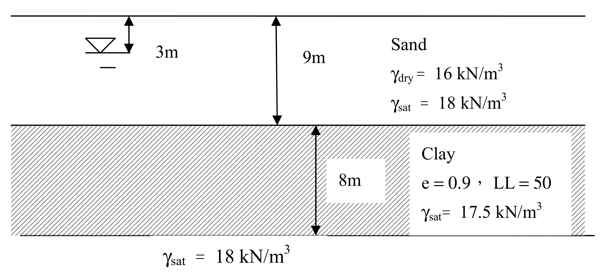
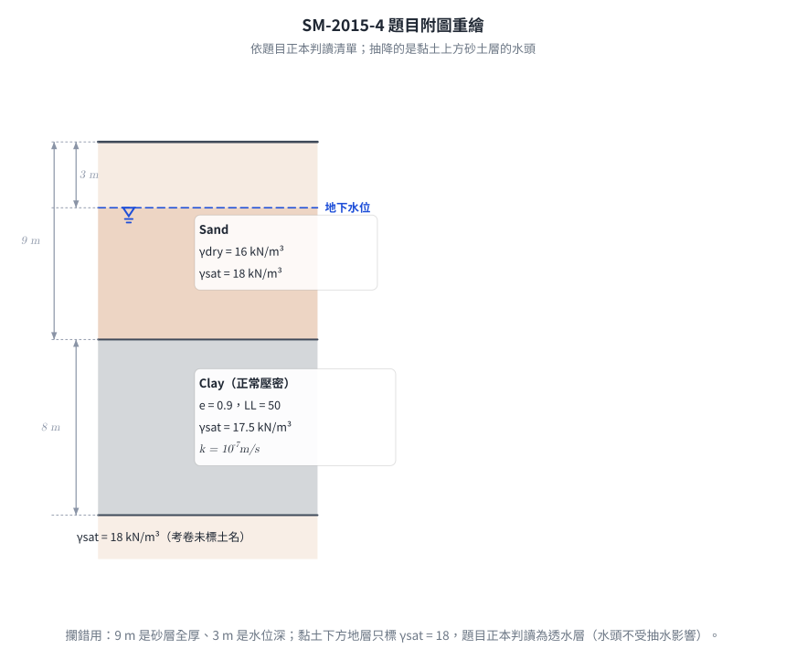
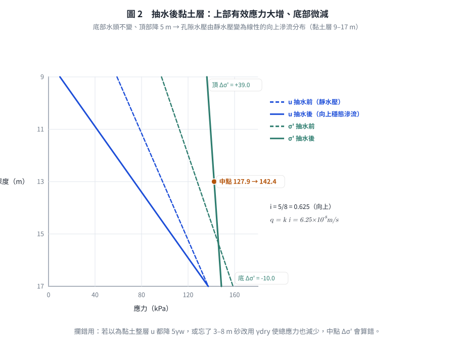

📄 題目正本：考卷原文・附圖・判讀清單（已確認）
SM-2015-4 題目正本
本檔只記錄考卷上寫了什麼、圖上畫了什麼，不含任何解法。解析見同資料夾
SM-2015-4.md。
判讀清單已確認（凍結）；本檔原則上不再修改（改動須回考卷原圖並記 log）。
| 項目 | 內容 |
|---|---|
| 考卷 | raw/exams/SM-2015_土壤力學與基礎設計.pdf 第 2 頁（背面），第四題 |
| 考年 | 民國 104 年（2015） |
| 配分 | 25 分 |
| 附圖 | SM-2015-4-fig-2.png（地層剖面；2026-11-15 由考卷重新擷取 500 dpi）；既有 SM-2015-4-fig-1.png 為同一圖，黏土層剖線內有滑鼠游標，保留不刪 |
| 判讀狀態 | 已確認（2026-11-15 關卡一：使用者授權依建議判讀確認；轉錄 2026-11-15；PyMuPDF 110 dpi 全頁目視，附圖 500 dpi 擷取（向量線條＋點陣剖線）；盲讀後才比對既有解析） |
1. 考卷原文（逐字）
四、一地層如下圖所示，該處地層之孔隙水壓呈靜水壓分布，地下水位面位於地表下 3 m 處。該正常壓密黏土，$\gamma_{sat}$ = 17.5 kN/m³，LL = 50，e =0.9，k = $10^{-7}$ m/sec，如因長期使用需求將黏土層上方砂土層之水頭抽降 5 m，則對該黏土層之滲流及壓密狀況將造成何種影響？分別計算黏土層單位面積最大滲流量及壓密沉陷量。（25 分）
2. 考卷給的公式、附表與參數
- 砂（上層）：厚 9 m、$\gamma_{dry}$ = 16 kN/m³、$\gamma_{sat}$ = 18 kN/m³；地下水位地表下 3 m。
- 黏土：厚 8 m、正常壓密、$\gamma_{sat}$ = 17.5 kN/m³、LL = 50、$e$ = 0.9、$k$ = $10^{-7}$ m/sec。
- 黏土下方地層：圖上只標 $\gamma_{sat}$ = 18 kN/m³（未標土名）。
- 初始孔隙水壓：靜水壓分布。
- 擾動：黏土上方砂土層水頭抽降 5 m。
- 沒有給：$C_c$（只給 LL）、$\gamma_w$、黏土下方地層的名稱與透水性、抽降後下方地層水頭是否改變。
- 卷首注意事項：㈠可以使用電子計算器。㈡不必抄題，作答時請將試題題號及答案依照順序寫在試卷上，於本試題上作答者，不予計分。
3. 附圖

圖面文字照錄：3m、9m、Sand、γdry = 16 kN/m3、γsat = 18 kN/m3、8m、Clay、e = 0.9，LL = 50、γsat= 17.5 kN/m3、γsat = 18 kN/m3。
4. 判讀清單
| # | 項目 | 判讀 | 圖上／題文依據 | 把握 |
|---|---|---|---|---|
| 1 | 地層 | 砂 0～9 m、黏土 9～17 m、17 m 以下為 $\gamma_{sat}$ = 18 的土層 | 附圖尺寸線 3 m、9 m、8 m | 確定 |
| 2 | 地下水位 | 地表下 3 m（尺寸線上端地表、下端水位符號） | 附圖、題文 | 確定 |
| 3 | 下方地層 | 未標名稱；以 $\gamma_{sat}$ = 18 與上砂同值推斷為透水層（砂），抽水後其水頭維持原靜水壓 → 黏土內產生向上穩態滲流 | 附圖只標 $\gamma_{sat}$ | 不確定（影響答案）；使用者授權依本判讀確認 |
| 4 | 抽降 5 m | 上方砂土層水頭降 5 m：地下水位由地表下 3 m 降至 8 m（仍在砂層內，高於黏土頂 9 m） | 題文 | 確定（解讀） |
| 5 | 抽降區砂土單位重 | 3～8 m 砂由 $\gamma_{sat}$ = 18 變為 $\gamma_{dry}$ = 16（排水後視為乾） | 題給 $\gamma_{dry}$ | 確定（解讀） |
| 6 | 壓縮指數 | 未給 $C_c$；須由 LL = 50 以經驗式估算（考卷未指定哪一式） | 題文 | 確定（解讀） |
| 7 | 所求 | (a) 對黏土滲流與壓密的影響（說明）；(b) 黏土層單位面積最大滲流量；(c) 壓密沉陷量 | 題文 | 確定 |
| 8 | 考卷沒有給 | $C_c$、$\gamma_w$、下方地層透水性 | 全題 | 確定 |
轉錄：2026-11-15（SM-U1-3 題目正本推廣・批 1）
確認：2026-11-15 使用者授權依建議判讀確認（SM-U1-3 題目正本推廣・批 1，關卡一；使用者指示「要我確認的請依你建議」）
考題編號：SM-2015-4
主分類： SM-U1-3 土壤夯實及壓密
副分類： SM-U1-2 土壤滲透、SM-U1-4 土體內應力
分析法： 有效應力法
標籤： 抽水降階 Darcy定律 穩定滲流 孔隙水壓 有效應力原理 壓密沉陷 壓縮指數Cc
1. 題目（考卷原文見題目正本）
考卷原文、公式／附表、附圖與判讀清單（已確認）見
SM-2015-4-problem.md。本節只列解題時最容易讀錯的地方與本解使用的記號；題意以題目正本為準。

重繪自考卷附圖，依題目正本判讀清單 #1–#3；攔下的判讀錯誤：9 m 是砂層全厚、3 m 是水位深，黏土下方地層須判斷是否透水。
常見誤讀
| 項目 | 正確判讀 | 常見誤讀 |
|---|---|---|
| 下方地層 | 只標 $\gamma_{sat}=18$，判讀為透水層、水頭不受抽水影響 → 黏土內向上穩態滲流（題目正本 #3，已確認） | 當成不透水層而沒有滲流 |
| 抽降範圍 | 上砂水頭降 5 m：水位由地表下 3 m 降到 8 m，仍在砂層內（#4） | 把水位降到黏土內 |
| $C_c$ | 考卷沒給，由 LL = 50 以經驗式估算（#6） | 誤以為題目給了 $C_c$ |
本解記號： $q$ 單位面積滲流量；$i$ 水力坡降；$\Delta\sigma'$ 有效應力增量；$S_c$ 壓密沉陷量。
2. 考題核心精神與出題者意圖 (Core Concepts & Examiner's Intent)
- 穩定滲流與有效應力變化：測驗考生是否能判斷「僅抽降上方砂土層」會導致黏土層上下邊界產生水頭差，進而引發由下向上的穩定滲流。
- 非靜水壓狀態之孔隙水壓計算：在穩定滲流下，黏土層內的孔隙水壓不再是靜水壓分布，而是隨總水頭線性變化，考生需能正確計算滲流狀態下黏土層內部的有效應力。
- 壓縮指數經驗公式：測驗考生是否熟悉未提供 $C_c$ 時，可利用液限 $LL$ 透過 Skempton 經驗公式求得。
3. 解題戰略地圖與陷阱分析 (Strategic Roadmap & Trap Analysis)
-
戰略一：滲流分析與水頭界定
以黏土層底部為基準面（Elev. 0m）。初始狀態地下水位在 Elev. 14m，黏土層上下水頭皆為 14m。抽水後上方砂土層水頭降 5m（變為 Elev. 9m），下方含水層未抽水（維持 14m），建立向上的水力坡降，以此計算滲流量。 -
戰略二：應力狀態分析
計算抽水前與抽水後達穩定滲流時，黏土層中央（代表點）的總應力與孔隙水壓，相減得到初始與最終有效應力。 -
陷阱：抽水使上方砂土層中 5m 厚之土壤由飽和（$\gamma_{sat}=18$）變為乾燥（$\gamma_{dry}=16$），故黏土層承受之「總垂直應力」會減少。若誤以為總應力不變，將導致有效應力計算錯誤。
-
戰略三：沉陷量計算
利用 Skempton 公式求出壓縮指數 $C_c$，再套用單層壓密沉陷公式求出沉陷量。 -
陷阱：有效應力在黏土層上方增加幅度大，底部甚至會因總應力減少而微幅解壓（回脹）。考場標準且最穩妥的作法是以黏土層「中央點」的應力變化為代表，將整層視為單一均質層計算。
3.5 變數層次分析 (Variable Hierarchy Analysis)
最終目標
計算黏土層因水頭抽降 5m 造成之單位面積最大滲流量（$q/A$）及壓密沉陷量（$S_c$）。
本題關鍵公式（依計算順序）
- 水力坡降：$i = \frac{\Delta h}{H_c}$
- 單位面積最大滲流量：$q/A = k \cdot \boxed{i}$
- 孔隙水壓分布（穩定滲流）：$u = \gamma_w \cdot h_p = \gamma_w \cdot (h - z)$
- Skempton 壓縮指數公式：$C_c = 0.009(LL - 10)$
- 壓密沉陷量（單層中央點法）：$S_c = \frac{\boxed{C_c} H_c}{1+e_0} \log \left( \frac{\sigma'_{vf,mid}}{\sigma'_{v0,mid}} \right)$
L1：題目直接給定
| 符號 | 數值 | 說明 |
|---|---|---|
| $H_c$ | $8 \text{ m}$ | 黏土層厚度 |
| $\Delta h$ | $5 \text{ m}$ | 黏土層上下邊界之水頭差（上方抽降 5m） |
| $k$ | $10^{-7} \text{ m/sec}$ | 黏土層滲透係數 |
| $LL$ | $50$ | 黏土層液限 |
| $e_0$ | $0.9$ | 黏土層初始孔隙比 |
L2：需知識點推導
滲流計算
| 符號 | 公式／來源 | 卡關? |
|---|---|---|
| $i$ | $i = \Delta h / H_c$ | |
| $v$ | $v = q/A = k \cdot i$ | |
應力計算 (以黏土層中央點，深度 13m 處為代表)
| 符號 | 公式／來源 | 卡關? |
|---|---|---|
| $\sigma_{v0}$ | $\Sigma (\gamma \cdot z)$ (初始水位 3m) | |
| $u_0$ | $\gamma_w \cdot z_{w,0}$ (初始水位 3m) | |
| $\sigma'_{v0,mid}$ | $\sigma_{v0} - u_0$ | |
| $\sigma_{vf}$ | $\Sigma (\gamma \cdot z)$ (最終水位 8m) | |
| $u_{f}$ | $(h_{mid} - z_{mid}) \cdot \gamma_w$ | |
| $\sigma'_{vf,mid}$ | $\sigma_{vf} - u_f$ | |
沉陷量計算
| 符號 | 公式／來源 | 卡關? |
|---|---|---|
| $C_c$ | $0.009(LL - 10)$ | |
| $S_c$ | $\frac{C_c H_c}{1+e_0} \log (\sigma'_{vf,mid} / \sigma'_{v0,mid})$ | |
L3：深層知識（不懂就卡住）
| 知識點 | 說明 | 卡關? |
|---|---|---|
| 穩定滲流孔隙水壓 | 抽水僅發生在上方砂層，下方地層水頭不變，水將由下往上滲流，孔隙水壓隨水頭線性變化，非靜水壓分布。 | |
| 總應力隨水位下降而減少 | 原本在地下水位下的砂土層（3m~8m區間）被抽乾後，單位重由 $\gamma_{sat}$ 變為 $\gamma_{dry}$，因此下方黏土層承受之總垂直應力 $\sigma_v$ 將會降低。 | |
| 壓縮指數經驗公式 | 當題目未給定 $C_c$ 卻給了 $LL$ 且為正常壓密黏土時，必須主動使用 Skempton 公式 $C_c = 0.009(LL-10)$ 求解。 |
4. 步驟化詳細計算過程 (Step-by-Step Detailed Calculation)
步驟一：評估對該黏土層之滲流及壓密狀況影響
- 滲流狀況：上方砂土層水頭抽降 5m，而下方地層未受抽水影響維持原水頭。因此，黏土層上下產生 5m 之水頭差，將誘發由下往上之穩定滲流 (Upward seepage)。
- 壓密狀況：上方水位下降導致水浮力消失，部分土層由飽和單位重變為乾單位重，使得總垂直應力下降；同時，由於水頭下降，孔隙水壓亦隨之下降。整體而言，黏土層中（特別是中上部）孔隙水壓之下降幅度大於總應力之下降幅度，導致有效應力增加，進而發生壓密沉陷。
步驟二：計算黏土層單位面積最大滲流量
設黏土層底部為基準面（Elevation $z = 0\text{ m}$，對應地表下 17m）：
- 黏土層底部（$z = 0\text{ m}$）：原水頭 $h_{bot} = 17 - 3 = 14\text{ m}$。因抽水僅在上方，底部水頭不變，故 $h_{bot} = 14\text{ m}$。
- 黏土層頂部（$z = 8\text{ m}$）：原水頭 $h_{top} = 14\text{ m}$。抽水降 5m 後，新水頭 $h_{top} = 14 - 5 = 9\text{ m}$。
- 水頭差 $\Delta h = h_{bot} - h_{top} = 14 - 9 = 5\text{ m}$。
- 水力坡降 $i = \frac{\Delta h}{H_c} = \frac{5}{8} = 0.625$（向上）。
依 Darcy 定律，單位面積最大滲流量（即滲流流速 $v$）：
$$ \frac{q}{A} = v = k \cdot i = 10^{-7} \text{ m/sec} \times 0.625 = \boxed{6.25 \times 10^{-8} \text{ m/sec}} $$
(註：若換算為每日滲流量，約為 $5.4 \times 10^{-3} \text{ m}^3/\text{day-m}^2$)
步驟三：計算壓密沉陷量（以黏土層中央點為代表）
取黏土層中央點（地表下 13m 處，或距底部 $z = 4\text{ m}$ 處）進行應力計算。
（註：計算中取水單位重 $\gamma_w = 9.81 \text{ kN/m}^3$）
1. 初始狀態（抽水前）：
地下水位在地表下 3m 處。
-
總應力 $\sigma_{v0}$：
$$ \sigma_{v0} = 3 \times 16 (\text{乾砂}) + 6 \times 18 (\text{飽和砂}) + 4 \times 17.5 (\text{黏土上半}) = 48 + 108 + 70 = 226 \text{ kPa} $$ -
孔隙水壓 $u_0$（靜水壓）：
$$ u_0 = (13 - 3) \times 9.81 = 10 \times 9.81 = 98.1 \text{ kPa} $$ -
初始有效應力 $\sigma'_{v0}$：
$$ \sigma'_{v0} = \sigma_{v0} - u_0 = 226 - 98.1 = \boxed{127.9 \text{ kPa}} $$
2. 最終狀態（抽水達穩定滲流後）：
上方砂層水頭降 5m，等同地下水位降至地表下 8m。
-
總應力 $\sigma_{vf}$（原 3m~8m 深度之砂土變為乾燥狀態）：
$$ \sigma_{vf} = 8 \times 16 (\text{乾砂}) + 1 \times 18 (\text{飽和砂}) + 4 \times 17.5 (\text{黏土上半}) = 128 + 18 + 70 = 216 \text{ kPa} $$ -
孔隙水壓 $u_f$（滲流呈線性分布）：
中央點總水頭 $h_{mid} = \frac{h_{top} + h_{bot}}{2} = \frac{9 + 14}{2} = 11.5 \text{ m}$
壓力水頭 $h_p = h_{mid} - z_{mid} = 11.5 - 4 = 7.5 \text{ m}$
$$ u_f = h_p \times \gamma_w = 7.5 \times 9.81 = 73.575 \text{ kPa} $$ -
最終有效應力 $\sigma'_{vf}$：
$$ \sigma'_{vf} = \sigma_{vf} - u_f = 216 - 73.575 = \boxed{142.425 \text{ kPa}} $$

圖 2 抽水後黏土內為向上穩態滲流：底部水頭不變、頂部降 5 m，孔隙水壓變成線性分布。攔下「以為黏土整層孔隙水壓都降 $5\gamma_w$」與「忘了上方砂改用 $\gamma_{dry}$ 使總應力也減少」兩種錯誤。
3. 計算沉陷量 $S_c$：
利用 Skempton 公式求壓縮指數 $C_c$：
$$ C_c = 0.009(LL - 10) = 0.009(50 - 10) = \boxed{0.36} $$
代入正常壓密黏土單層沉陷公式：
$$ S_c = \frac{C_c H_c}{1 + e_0} \log \left( \frac{\sigma'_{vf}}{\sigma'_{v0}} \right) $$
$$ S_c = \frac{0.36 \times 8}{1 + 0.9} \log \left( \frac{142.425}{127.9} \right) = \frac{2.88}{1.9} \log (1.11356) $$
$$ S_c \approx 1.5158 \times 0.04671 \approx 0.0708 \text{ m} = \boxed{7.08 \text{ cm}} $$
5. 關鍵爭議點與進階探討 (Critical Issues & Advanced Discussion)
-
有效應力變化不均勻與分層計算差異
本題因總應力下降且有向上滲流，黏土層內有效應力變化呈現極大梯度：頂部有效應力增加量較大（約 $+39\text{ kPa}$），而底部由於總應力減少但孔隙水壓未變，有效應力甚至會微幅減少（約 $-10\text{ kPa}$，理論上會發生微量回脹）。若將 8m 黏土層切分為 4 層（每層 2m）分別計算再加總，求得之沉陷量約為 $8.09\text{ cm}$，會比單點中央代表法稍大且更精確。然而，依國家考試慣例，除非題目特別要求分層計算，否則以「中央點」作為單層均質代表的算法（即得出 $7.08\text{ cm}$）是公認且標準的得分作法。 -
$\gamma_w$ 之選用標準
本題未明示水單位重，依常規選用 $\gamma_w = 9.81\text{ kN/m}^3$ 進行精密計算。若考場上為了速算而採用 $\gamma_w = 10\text{ kN/m}^3$，求出之沉陷量約為 $7.40\text{ cm}$，只要列式清晰、觀念正確，通常評卷委員仍會給予滿分或極高之部分給分。
修正日期：2026-11-15（§1 改為指向題目正本 SM-2015-4-problem.md，重繪附圖 figs/SM-2015-4-fig-1-problem.svg；§4 步驟三 補解題圖解 figs/SM-2015-4-fig-2-seepage.svg；非勘誤）